Featured
Places
Myanmar is country rich in history,
culture and tradition.
Shwedagon Pagoda
The Most Sacred Pagoda#1 No Myanmar sightseeing is complete without a visit to the fabulous gilded Shwedagon Pagoda. It's considered to be one of the most sacred pagodas in Myanmar.
Bagan
For Breathtaking Views#2 The ancient city of Bagan is perhaps one of the most interesting places in Myanmar. Over 2,000 Buddhist monuments dot the Bagan Archeological Zone that's spread across 26 square miles.
Inle Lake
Go For Boating#3 Next on our list of what to see in Myanmar is Inle Lake, which is the second largest in the country and occupies one of the highest elevations.
Ngwe Saung
Laze Around On The Beach#4 Myanmar beaches aren't exactly the first places you think of going to when visiting the country. But these little known gems are incredibly picturesque.
Kyaiktiyo Pagoda
Witness The Balanced Rock#5 It may be small but Kyaiktiyo Pagoda or Golden Rock in Mon State is one of the most striking pagodas because of its location.
Kalaw
Ideal For Adventure Fanatics#6 If visiting Myanmar is solely to calm your adventurer inside, Kalaw is the place you need to be in. This place was one of the least explored places around in Myanmar.
Mandalay
A Popular Pilgrimage Site#7 Mandalay is one of those towns in Myanmar that is known around the world for its rich culture.
Ngapali
Opt For Watersports#8 Yet another of the must visits around in Myanmar is Ngapali. This is possibly the most popular sand stretch around in Myanmar.
Pindaya
Trek & Explore Places#9 Myanmar is known vividly around for their religious beliefs and Pindaya is one of the off the beaten track sites that you will possibly come across.
Beautiful
Places
Myanmar is country rich in history,
culture and tradition.
{kind=link}
{kind=link}
{kind=link}
{kind=link}
{kind=link}
This is a Our presentation.
This video was shot completely in Myanmar (Burma)
Myanmar is country rich in history, culture and tradition. It's midway between undergoing urbanization so that when you visit, you see an incredible mix of modern and old.
Blog
Entries
Enjoy your next trip to this scenic land of gold,
and pamper the traveler in you with these essentials to have a more fun-filled and adventurous holiday!
-
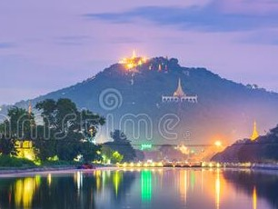
Climb The Famous Mandalay Hill
25 July 2022It'll take almost half an hour to reach the summit of this 760 feet tall hill but passing the several sacred temples and pagodas on your way, you might have to cover certain areas barefoot...
-
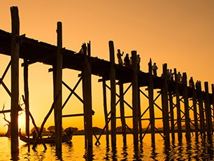
Count Your Steps At The U Bein Bridge
16 July 2022Walking on the world's oldest and longest bridge is an experience of its own kind. While the stunning surrounding views of the Taungthaman Lake may tempt you to occasionally stop...
-
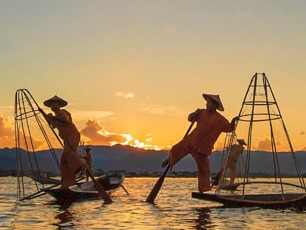
Explore The Enchanting Inle Lake
10 July 2022The Inle Lake offers both rejuvenation and a perfect landscape view to click some of the best shots of your memorable stay in this scenic land. This second largest freshwater lake...
-
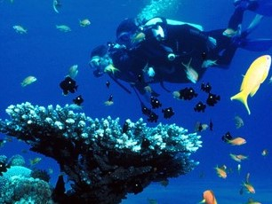
Dive Into The Serene Waters Of Mergui Archipelago
30 June 2022Looking for some activities to do in Myanmar? Well, we've got you covered! Head to the Mergui Archipelago to view some of the unique vibrant fishes and explore the marine life underwaters. This site serves as the perfect spot...
-
Try The Delicious Burmese Cuisines
24 June 2022Ready to taste some local delicacies? Hop on a ride and visit Mandalay for their yummy Mont Lin Ma Yar, which looks like tiny doughs of crisp chickpeas, quail eggs, and scallions...
-
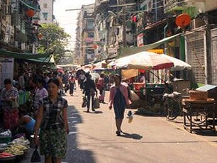
Go On A Shopping Spree In Yangon
12 June 2022If you're wondering, 'what to do in Yangon, Myanmar?', this one is just for you! Since Yagon is filled with night markets and your vacation will be incomplete without strolling into one...
-
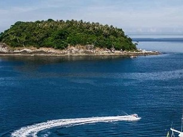
Mergui: Sail Around The Place
26 May 2022The Mergui Archipelago is known around the globe with its pool of the destinations it showcases. Some of its scattered parts around in the Andaman Islands are often regarded...
-
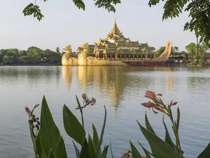
Kandawgyi Park: Spend Recreational Time
22 May 2022If you are a person who is looking for peace and tranquility on a holiday then, this is the perfect place for you. The park was built during the colonial period and was very important to the british rulers...
-
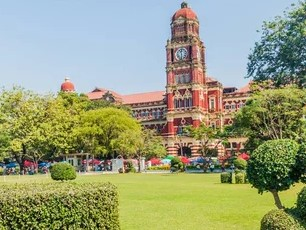
Maha Bandoola Garden: Relax & Unwind Here
8 May 2022Searching for recreational places to visit in Myanmar? Then, you must head to Maha Bandoola Garden which is a public place in Yangon. After sightseeing, you can relax here with your friends or family and unwind for a while...
-
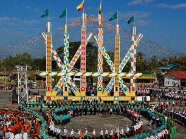
Kachin Manaw Festival
26 April 2022This famous festival in Myanmar is a joint festivity of the new year, battle victories, the tribes' reunion, and the tradition. Manaw poles are erected and men & women dance around it...
-
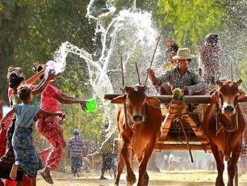
Thingyan Water Festival
24 April 2022This water festival in Myanmar 2022 is the most important amidst the Myanmar water festivals as it marks the onset of a new Burmese year. People get on stages erected on the streets by Bamboos and drench each other in the water...
-
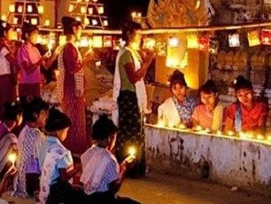
Thadingyut Festival Of Lights
20 April 2022Myanmar Thadingyut Festival of Lights commemorates with the onset of winter and symbolizes the return of Buddha to paradise from the mortal land. You can enjoy the sight of lightings everywhere or even create your own...
Contact
Sentra
If you have any questions,
you can contact us.